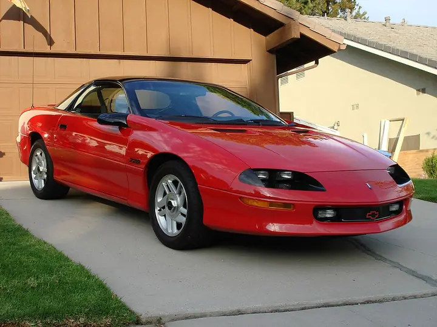
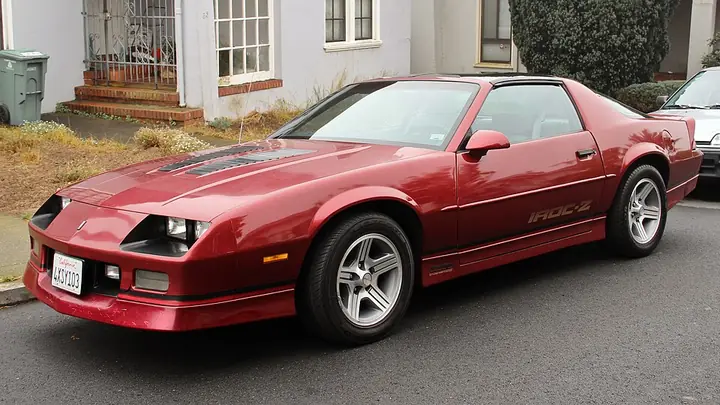
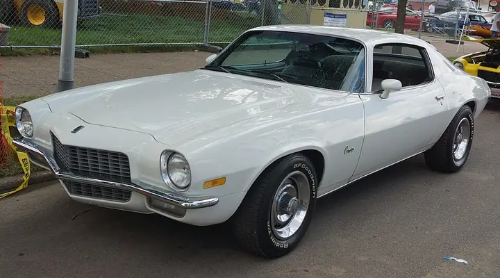
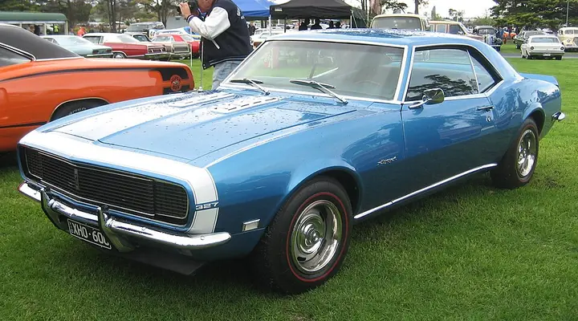

Chevrolet Camaro
Sixth generation (2016–2024) · 2015–2023
Abstract
This generation of the Chevrolet Camaro is a pony car, built October 2015 – December 2023 in United States: Lansing, Michigan (Lansing Grand River Assembly). Body styles: 2-door coupé, 2-door convertible. Layout: Front-engine, rear-wheel drive. Designed by Hwasup Lee (2012), John Mack. This generation has its own article: Chevrolet Camaro (sixth generation).


1Specifications
| Production | October 2015 – December 2023 |
|---|---|
| Model years | 2016–2024 (United States)2016–2024 (Japan)2017–2022 (South Korea)2017–2024 (Brazil)2017–2024 (Mexico)2019–2020 (Russia)2019–2022 (Argentina)2021–2024 (Colombia) |
| Assembly | United States: Lansing, Michigan (Lansing Grand River Assembly) |
| Designer | Hwasup Lee (2012)John Mack |
| Class | Pony carMuscle car (S) |
| Body style | 2-door coupé2-door convertible |
| Layout | Front-engine, rear-wheel drive |
| Platform | GM Alpha |
| Engine | 2.0 L LTG Ecotec turbo I4 (LS, LT)3.6 L LGX V6 (LT)6.2 L LT1 V8 (LT1, SS)6.2 L LT4 supercharged V8 (ZL1) |
| Transmission | 6-speed TR-3160 manual (LS, LT)6-speed TR-6060 manual (LT1, SS, ZL1)8-speed 8L45 automatic (LS, LT)8-speed 8L90 automatic (SS)10-speed 10L60 automatic (LT - V6 models only)10-speed 10L80 automatic (LT1, SS)10-speed 10L90 automatic (ZL1) |
| Wheelbase | 110.7 in |
| Length | 188.3 in188.4 in (China) |
| Width | 74.7 in |
| Height | 52.0 in (ZL1 1LE)53.1 in53.4 in (China) |
| Weight | 3339 lb 2.0 (LT)3435 lb 3.6 (LT)3461 lb 2.0 (RS)3618 lb (LT1)3685 lb (SS)3760 lb (SS; automatic)3880 lb (ZL1)3820 lb (ZL1 1LE) |
| Related | Cadillac ATSCadillac CTSCadillac CT4Cadillac CT5 |
| Predecessor | Chevrolet Camaro (fifth generation) |
2Versions
- SS
- ZL1
- ZL1 1LE Extreme Track Performance Package
- HSV Chevrolet Camaro (Australia)
- Redesign
- Appearances
- Indy 500
- Hertz-Hendrick Motorsports
3Previous generations

_(cropped).jpg){kind=link}



_(cropped).jpg){kind=link}

_(cropped).jpg){kind=link}

.jpg){kind=link}
4Generation by generation
Length +2% from the first to the last
1967–1969 19664,691 mm
1970–1981 19704,775 mm
1982–1992 19814,877 mm
1993–2002 19924,915 mm
2010–2015 20094,836 mm
2016–2024 20154,783 mm
Weight +1% from the first to the last
1970–1981 19701,501 kg
1982–1992 19811,400 kg
2010–2015 20091,701 kg
2016–2024 20151,515 kg